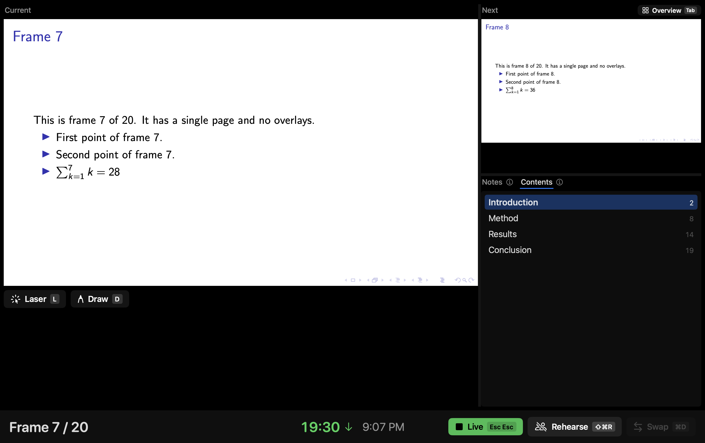

Benjamin Lockwood

Associate Professor
Business Economics and Public Policy
The Wharton School
University of Pennsylvania
Software
Lectern: PDF Presenter
A presenter app for macOS, built for Beamer decks.
Lectern is a presenter app for macOS that I wrote for giving talks from Beamer PDFs. Your laptop shows the current slide, the next one, your notes and a timer; the projector shows only the slide. It knows what a Beamer deck is: overlays count as one frame, sections become a table of contents, and when you recompile the deck it reloads in place at the same frame.
[Download Lectern 0.1.1 for macOS] Disk image, 2.4 MB. Apple silicon and Intel, macOS 26 (Tahoe) or later. Signed and notarized. Open the disk image and drag Lectern to Applications.

Features
- Presenter view and audience window. Current and next slide, notes, frame count, timer and clock on your screen; the slide alone, full screen, on the projector. With one display the audience view is a floating window, and Rehearse mode runs a talk with no audience view at all.
- Beamer-aware. Overlays are grouped into frames, so the count reads "Frame 7 / 20" rather than a page number, and the overview grid shows frames or builds. Section bookmarks become a clickable table of contents, and an Appendix section marks the end of the main talk.
- Speaker notes from wherever you keep them. A
.pdfpcfile or\pdfpcnote,pdfcomment, Beamer's "show notes on second screen", a PowerPoint file beside the PDF, or a plain JSON sidecar, with basic Markdown. - Live reload. Recompile and Lectern swaps in the new PDF at the frame you're on. The audience never sees a blank screen.
- Jumping around. Type a frame number, click a section, an overview thumbnail or a link in the slide, and Back takes you to where you were. Black screen, white screen and Freeze for Q&A.
- Laser pointer and ink. A red pointer and freehand drawing, shown on the audience display as you move.
- Timer. Elapsed time or a countdown, from the pdfpc duration or typed in, green until the time is up and red after.
- Keyboard-first. Every action has a key, presentation clickers work out of the box, and ⌘/ shows the shortcut card.
The source is on GitHub under the MIT license, along with all releases. This is an early release, so bug reports are welcome there.